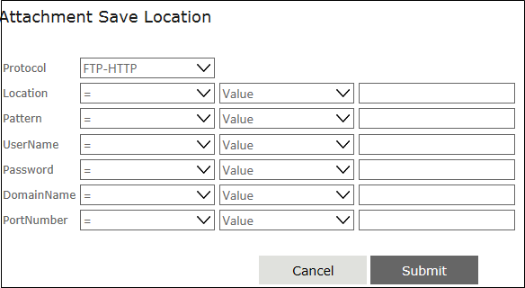

No
Wait for Email: Attachment Save Location
You can specify the details of the location to which the email attachment should be stored in this property window. To open this window, click the button for the 'Attachment Save Location' property.

This window has the Protocol drop down where you can select the file transfer protocol.
Note: Email attachments can be stored only in File and FTP paths.
Below the Protocol drop down, it has controls to specify the following details.
- Location - You can specify the URI/UNC of the file or directory here.
- Pattern - You can specify the pattern to decide the file types to be saved like *.doc,*.xls, etc. in this field.
- UserName - You can specify the user name for the attachment save location here.
- Password - You can specify the password for the attachment save location here.
- Domain - You can specify the domain/machine of the attachment save location here.
- PortNumber - You can specify the port number of the attachment save location server.
Each of the above parameter fields has the following controls.
- The Operator drop down - You can select the operator for the expression here. E.g., "="
- The Value type drop down - You can select the type of value to assign to the parameter in the expression. You can specify Variable, Content, Value, or XMLVariables here.
- The Value text box/drop down - You can specify the actual value to assign to the parameter. The control displayed depends on the option selected in the preceding drop down. If you had selected "Value", it will display a text box here. You can enter a discrete value in this box to complete the expression. If you had selected "Variable", "Content", or "XMLVariables" instead, there will be a drop down instead of the field. This drop down will have the variable collection or content collection or XMLVariables collection from which you can select an appropriate option.
At the bottom of the window you will find the following buttons:
- Submit - You can click this button to save the parameters that have been specified.
- Cancel - You can click this button to cancel the settings and close this window.